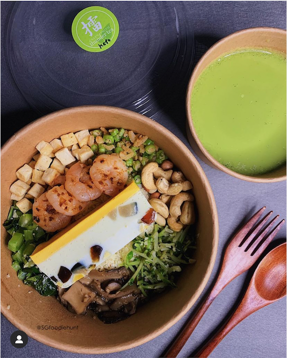

Our Long and Expensive Delivery Route
Covid-19 has turned many bored people in Singapore into small-time home-based business owners, selling everything from handmade soy candles, homebrewed coffee to all kinds of grandma recipes on platforms like Instagram, Cococart, Carousell and Shopee.
My husband David and I jumped on the bandwagon in Dec 2020 too. We sell a Hakka heritage dish called Lei Cha, or Lui Cha -- depending on whether you're pronouncing it in Mandarin Chinese or the Hakka/Cantonese dialect. It's been widely (mis)translated as Thunder Tea although it's got nothing to do with thunder, thunderstorm or Thor.
This is a keto-friendly version of our Thunder Tea rice set. Image by @sgfoodiehunt, an Instagram food reviewer.
You can think of Lei Cha as the Chinese Hakka version of Japanese ochazuke, Korean bibimbap, Hawaiian poke bowl, or simply a healthy and hearty salad bowl. The dressing that comes with it is a basilicious paste that we blend using a number of herbs, peanuts and sesame seeds. It can be diluted with hot water or tea, and served as a soup on the side.
This video shows the making of our Thunder Tea paste. Video by Pei Rong.
Our Lei Cha soup paste has been quite a hit with our customers, in particular among health-concious and weight-conscious women. We've sold over 800 jars of them on Shopee and another 400 or so on Instagram - a result that we are pretty happy with considering how little marketing we do.
Making the Lei Cha paste is a laborious affair, but an even bigger problem we've been facing is the delivery cost. The charges for engaging professional logistics companies to deliver our chilled paste to many locations across the island within a few hours are prohibitive. Hence, we've been doing it ourselves, spending hours and hours on the road every Saturday to fulfill the orders for the week.
Here's an example of our very long delivery route on July 2, the day when fuel price in Singapore surged to $3.15 or higher per liter - depending on the brand and type of fuel.